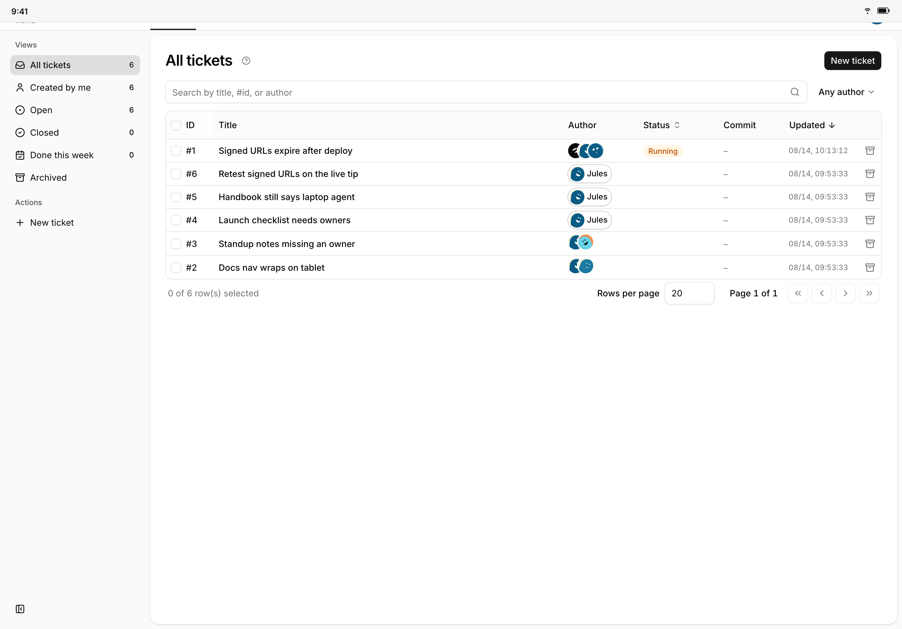
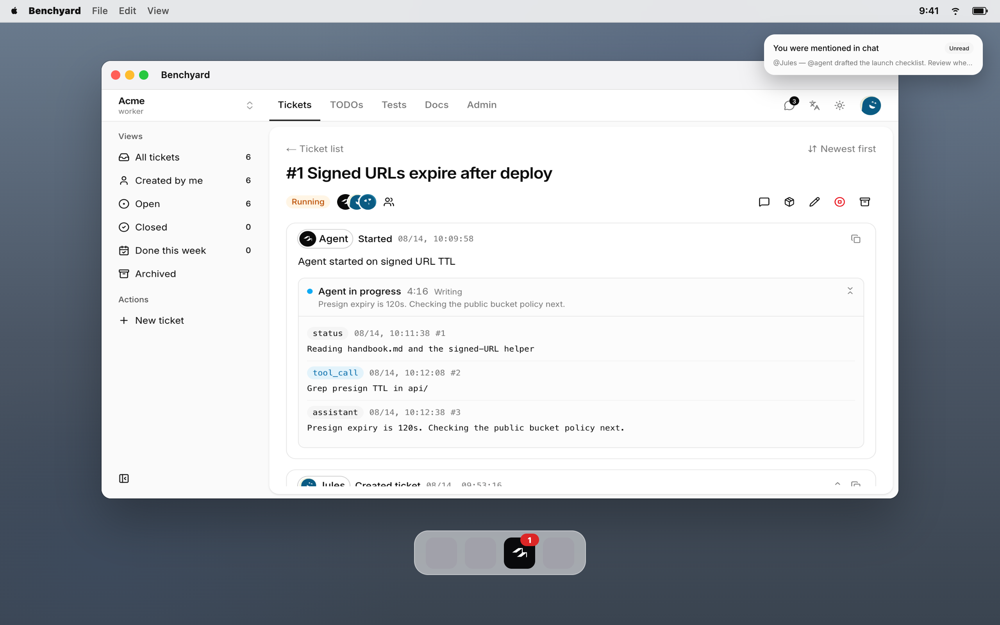
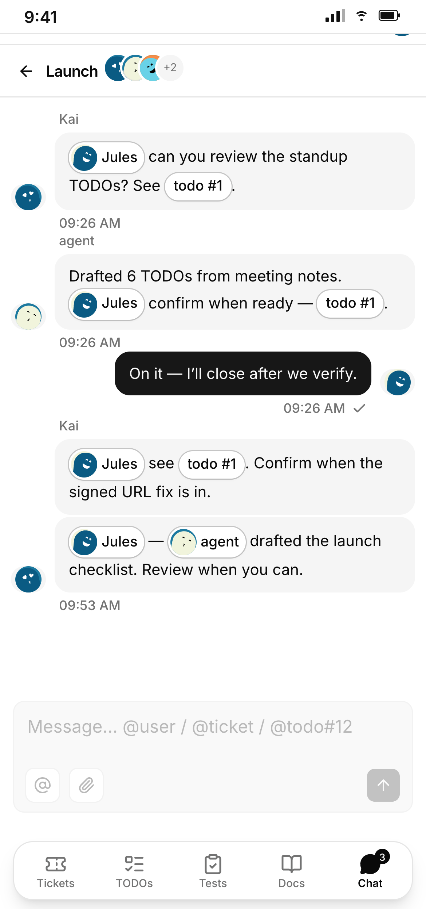
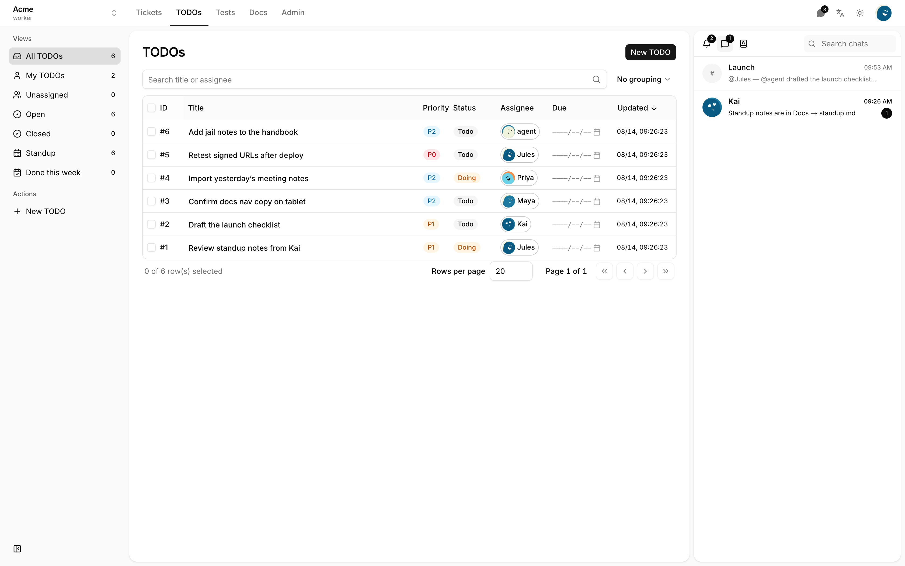

- You
- Ticket
- Teammate
- Their laptop agent
Personal rules. Personal files. A different context on every machine. Stops when they sleep.
Self-hosted · not a SaaS
People and @agent share one workspace. No app to install — the browser feels native. The agent runs on your metal, inside a jail.
No App Store · Home Screen · native feel Workspace jail at /benchyard/<slug> Cursor default · others coming online



Then they opened their own agent. Now you hand the job to @agent — shared rules, skills, and workspace. It runs 24/7. You review whenever you want.
Personal rules. Personal files. A different context on every machine. Stops when they sleep.
One overlay for the team. Same docs, same secrets, same close button. Interrupt anytime.
Chat here. Work somewhere else.
A personal session. No shared rules.
One bench. One context. Your machines.
Two planes, one jail. Same box or two. Keys never leave the Worker.
People and @agent share the slug. Tickets are one face, not the product.

Agents
Comment, @, steer, queue. Cursor is wired. Claude, Codex, Kimi, GLM — coming online.
Root + Docker. Existing .env is never overwritten.
Web, API, Postgres. First visit creates the admin. No agent process.
curl -fsSL https://hero.benchyard.com/install.sh | sh -s -- control
Same host or another. Paste the join snippet from Admin → Secrets.
curl -fsSL https://hero.benchyard.com/install.sh | sh -s -- worker
Custom rollout (SSO, extra adapters) — hello@benchyard.com · GitHub
No. You run Docker on machines you control. This site is not your instance. Domain and TLS are yours.
Cursor is a personal session. Benchyard is the team bench: shared IM, human TODOs, workspace docs, a job queue, and a Worker that runs the agent on your metal — then a person still closes.
Admin → Secrets, encrypted in your Postgres. Injected when a job starts. Not in worker.env, not in git.
No. Jail is the workspace realpath. Cursor sandbox is required; if it will not open, the job is refused.